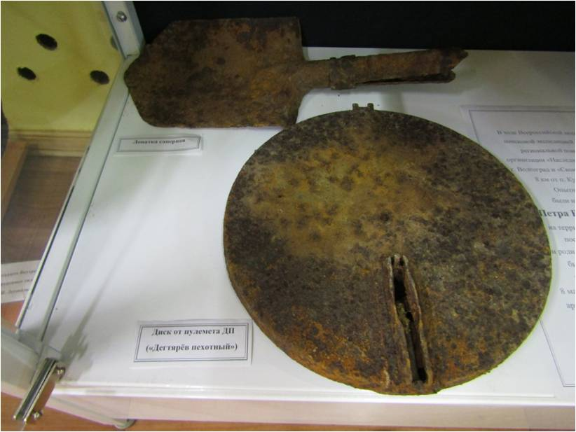

Зауткин Петр Васильевич
20 октября состоялась торжественная церемония захоронения останков солдата Великой
Отечественной Войны Зауткина Петра Васильевича, 1898 г.р., уроженца Кичменгско-Городецкого района,
д. Минин Дор, бывшего Верхнеенангского сельсовета, сейчас поселение Енангское, погибшего в 1943 г.,
и поднятого в ходе работы поисковой экспедиции в рамках Всероссийской акции «Вахта памяти» в
Волгоградской области на территории Кузьмичевского сельского поселения.
За время поисковой экспедиции поисковые отряды «Красноармеец» и «Свои» из Волгоградской и
Самарской областей еще в мае этого года обнаружили останки 32 советских воинов.
По результатам «Вахты Памяти» установлены имена нескольких из них.
В музей переданы найденные вещи воина, это: каска СШ-40, лопатка саперная, медальон нательный,
мундштук, медальон морской (ЛОЗ), котелок, диск от пулемёта «Дегтярёв», звезда фуражечная, кубарь,
петлица, фишка домино, гильза и складной ножик. «Мы нашли и его личные вещи. В подсумке находились
документы, письма и ведомость с печатью Вологодской области на имя Зауткина Петра Васильевича»,
— рассказали поисковики.
Каска Зауткина Петра Васильевича

-Лопатка саперная
-Диск от пулемёта ДП «Дегтярёв пехотный»